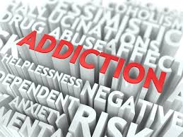
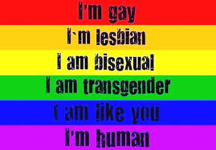
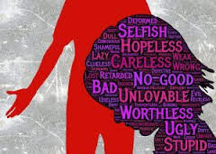

|
DON BOSCO INSTITUTE OF TECHNOLOGY |
|
DON BOSCO INSTITUTE OF TECHNOLOGY |
Academic problems |
Addictions |
Emotional Issues |
Aggression |
Psychosis |
LGBT |
Personal Issues |
Adjustment issues |
Low self- esteem |
Sexual behaviour |